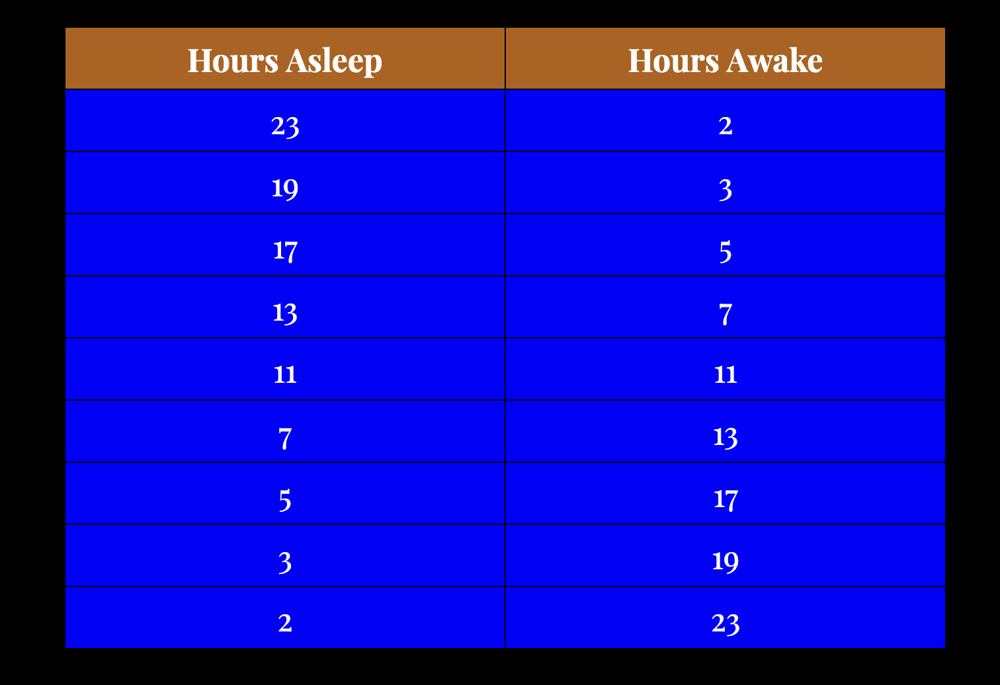

:: .08 ::
“What are you building?” Luuk asked.
“A rock wall,” Andrew said.
“Obviously,” Luuk said. “But I imagined you were making a straight line. These are like little pens.”
Jakob spoke. “We are building an altar to the almighty lithoDeity, who forged our planet through brute force and mass.”
“Oh?” Luuk said.
Andrew stopped and smiled. “If we don’t pay proper wor[th]ship to the lithoDeity, they will smash us into un[w]hol[l]y bits.”
:: .09 ::
Andrew and Jakob began wearing [cervidae] animal hides. Hector went to sleep. He’d just concluded some insane sleep schedule that went as followed:

And now was the time to sleep for 23-straight hours again.
“He believes he’ll find «the ultimate meaning of existence»,” Andrew explained.
“I thought he already found that with TheHole™?” Jakob said.
“He doesn’t believe the letter is real,” Andrew said. “He doesn’t see how the letter could answer «the ultimate meaning of existence». He thinks I forged the letter.”